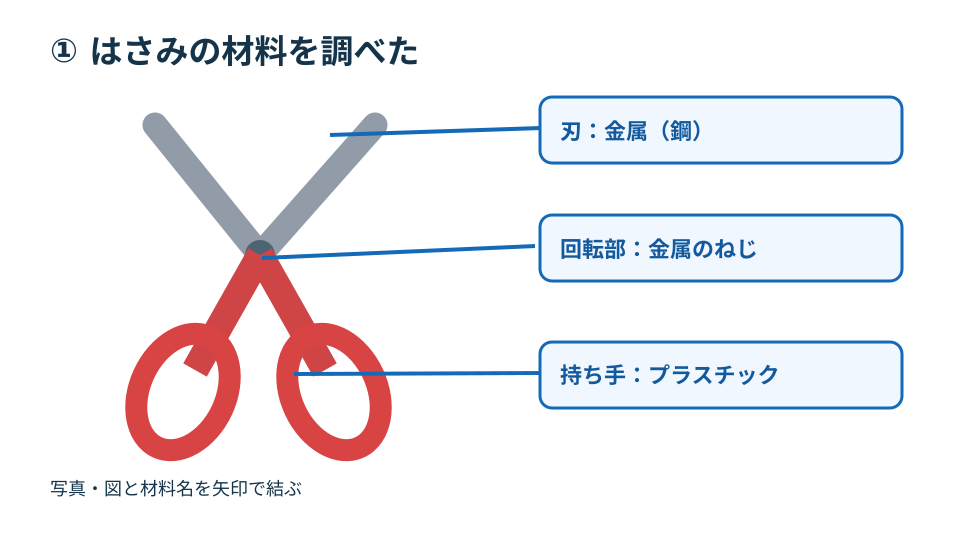
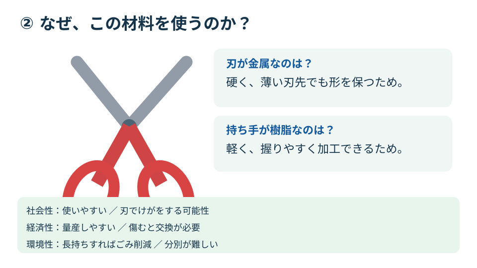
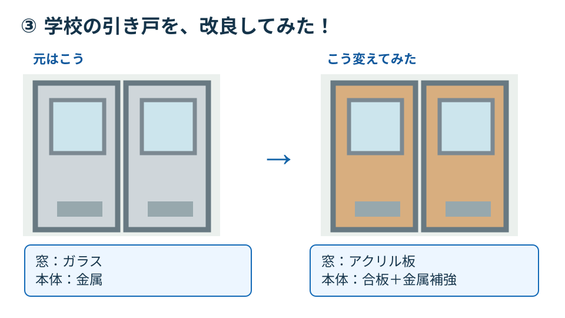
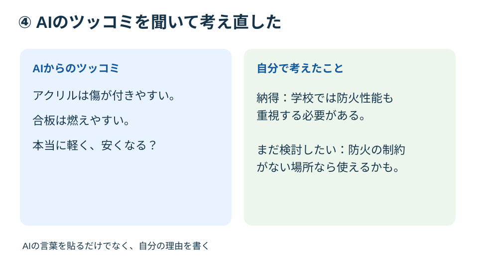

01 必須
製品の材料を調べる
写真を入れ、矢印で「どこに何の材料？」を書く。

最初に ①・②ページ を完成させよう。
先生の見本を見ながら、自分の製品で作ってみよう。
写真を入れ、矢印で「どこに何の材料？」を書く。

①と同じ製品。良い点・悪い点を、社会性・経済性・環境性から考える。

新しい組み合わせと理由を紹介。①②と別の製品でもOK！

納得した点・疑問に思った点を、自分の言葉で説明する。

「素材の組み合わせ探求サポーターGem」で相談・③の画像生成・④のツッコミができます。
AIは間違えることもあります。必ず確認し、丸写ししないこと。明らかな誤りのコピペは減点です。
① 写真と材料名を書いた？
② 自分なりの理由を書いた？
名前・組・番号は入れた？